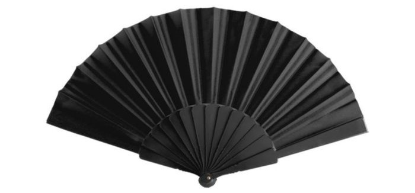

Petten en hoedjes
Zie hier meer hoedjes en petten

Rave brillen
Zie hier meer brillen

Rave tasjes
Zie hier meer tasjes

Rave waaiers
Zie hier meer waaiers
Rave-hoedjes en -petten zijn populaire accessoires die vaak worden gedragen raves. Ze voegen niet alleen een stijlvolle en eigenzinnige uitstraling toe aan een outfit, maar dienen ook praktische doelen zoals het beschermen tegen zonlicht en het verbeteren van de algehele uitstraling.
Rave-brillen zijn populaire accessoires die vaak worden gedragen op raves. Deze brillen zijn ontworpen om visueel opvallend en soms experimenteel te zijn, en ze kunnen de ervaring van lichtshows en visuele effecten verbeteren.
Rave-tasjes zijn kleine tassen of heuptasjes die speciaal zijn ontworpen voor gebruik op raves. Deze tasjes zijn praktisch, stijlvol en ideaal om enkele essentiële items bij je te dragen terwijl je aan het raven bent.
Rave-waaiers zijn populaire accessoires op raves. Ze zijn ontworpen om verkoeling te bieden, stijlvol te zijn en te dienen als een visueel statement.
Ontdek hier
Zie hier meer hoedjes en petten
Zie hier meer brillen
Zie hier meer tasjes
Zie hier meer waaiers